AI Academy · Level 4 · Grade 9 · Week 7 · Student lesson
Sampling and Intended Use
Learn to understand, design, build, test and explain AI systems responsibly.
Project: Responsible Plant Classifier
Before you start
AI-2 Week 19: compare the sample with the intended population.
Plan time to read, investigate and explain. Keep predictions separate from observations.
Student lesson · 1 of 14
Your mission
Your learning target
I can inspect row meaning missing values and repeated records.
I can document dataset source schema and limitations.
I can separate observed quality flags from justified corrections.
Remember before reading
Close your notes first. A rough first answer helps us choose the right starting point; it is not a score for your ability.
Without opening the old lesson, explain one key idea from Label Quality. Give an example and a mistake that the idea helps you avoid.
Without opening the old lesson, explain one key idea from Python and Table Readiness. Give an example and a mistake that the idea helps you avoid.
Without opening the old lesson, explain one key idea from The ML Lifecycle. Give an example and a mistake that the idea helps you avoid.
After trying, check the relevant lesson or ask your teacher. Change the part of your explanation that the evidence shows was wrong.
Training examples should represent the people, objects, conditions, and devices described by the intended-use statement.
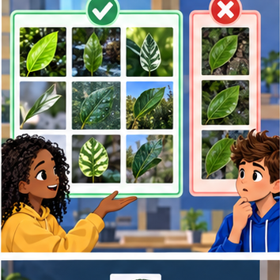
Builder name and experiment date:
Readiness for the connected explanation
Why is elapsed trip duration in minutes a regression target even when recorded as whole numbers?
This week’s end goal
By the end, I can explain sampling and intended use using a traced example and a stated limitation.
Student lesson · 2 of 14
Notice the evidence
PICTURE ENTRY
Notice → Predict → Explain
Begin with visible evidence; do not explain more than the picture and information support.
Name three visible details without interpreting them.
Predict the data, model, or evaluation decision being made.
Identify one hidden assumption that could change the result.
State what evidence would confirm or reject your prediction.
My prediction and supporting evidence:
A closer explanation
A dataset can look like a neat table and still contain missing outcomes, repeated records or impossible values. Before fitting a model, inspect what one row represents and document where the table came from. A dataset card is a short record of its purpose, contents, collection, changes and limits. It helps another person decide whether the data suits a proposed use.
Our source is a teacher-authored fictional export called Robot practice v1, created for this lesson. Each row is intended to describe one trip, with one unique trip ID and elapsed duration in minutes. Durations may be zero or positive; None means unknown. All trips are described as indoor practice trips. No real robot measurements or personal records were collected, and there is no evidence about outdoor performance.
| Trip ID | Duration in minutes | What is visible |
|---|---|---|
| A | 8 | A recorded duration |
| B | None | An unknown duration |
| B | None | The same ID appears again |
| C | -2 | A negative duration |
| D | 12 | A recorded duration |
Keep this raw version unchanged. At this stage a flag means investigate, not automatically delete or replace. A repeated ID might be a copied row or a problem with the supposed one-row-per-trip definition. We need evidence before deciding what happened.
Student lesson · 3 of 14
See how it works
ML MECHANISM
Input → Model → Evidence
Trace the information, fitted behavior, and evaluation proof separately.
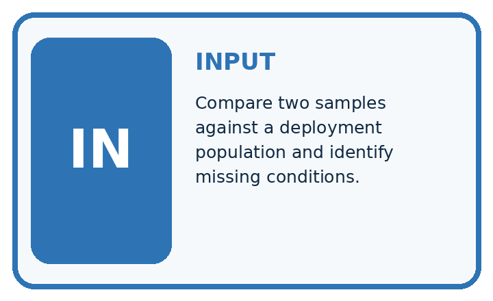
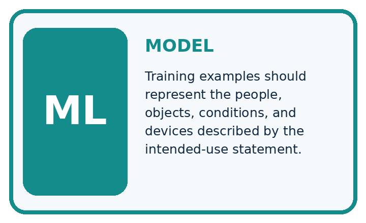
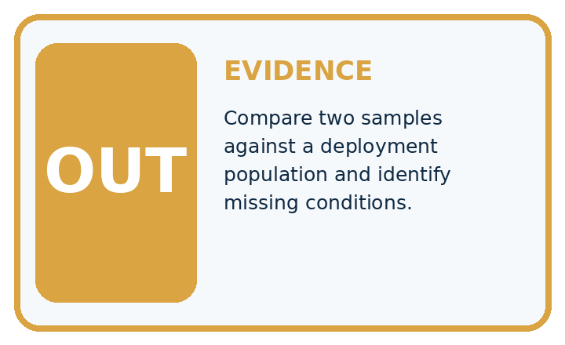
QUESTION Compare two samples against a deployment population and identify missing conditions.
MODEL IDEA Training examples should represent the people, objects, conditions, and devices described by the intended-use statement.
PROOF NEEDED Use an unseen case, visible calculation, error analysis, and a stated limitation.
Draw a fresh data → model → prediction → evaluation trace:
A closer explanation
rows = [("A", 8), ("B", None), ("B", None),
("C", -2), ("D", 12)]
ids = set()
missing = 0
negative = 0
for trip_id, minutes in rows:
ids.add(trip_id)
if minutes is None:
missing = missing + 1
elif minutes < 0:
negative = negative + 1
print(len(rows), len(ids), missing, negative)A set stores each distinct ID once. The output is 5 4 2 1: five rows, four distinct IDs, two rows with unknown duration and one row with a negative duration. There is one extra occurrence beyond the four distinct IDs. This is not a count of all rows in repeated-ID groups: both B rows belong to that group.
Turn an observation into a documented action
The code assumes every row is a pair and each duration is a number or None. It is a small audit, not full schema validation. It does not check text values, units, source truth or whether IDs refer to real unique events. A successful run does not certify data quality.
Connect the picture and the explanation
Point to the input, the deciding step and the result in this week’s visual. Explain the same step in ordinary words. A picture helps when you can say what each part represents.
Student lesson · 4 of 14
Compare the cases
EVALUATION DESIGN
Four Tests, Four Kinds of Evidence
A system is not understood until it survives more than one comfortable example.


NORMAL Expected data and expected behavior.
BOUNDARY Value close to a threshold, ambiguous label, or uncertain prediction.
MISSING Necessary field, label, source, or measurement is unavailable.
SHIFTED New lighting, species, device, subgroup, or time condition.
Which case most threatens today's claim, and why?
Change one thing in the pictured case
Change: Collect 12 more midday windowsill photos of the same plants.
Prediction: The evening-coverage gap remains.
Reason: More rows in the same condition do not supply evidence about the missing condition.
Student lesson · 5 of 14
Words that unlock the idea
VOCABULARY
Words You Can Calculate and Defend
A definition matters when it lets you interpret a new dataset, model, or result.
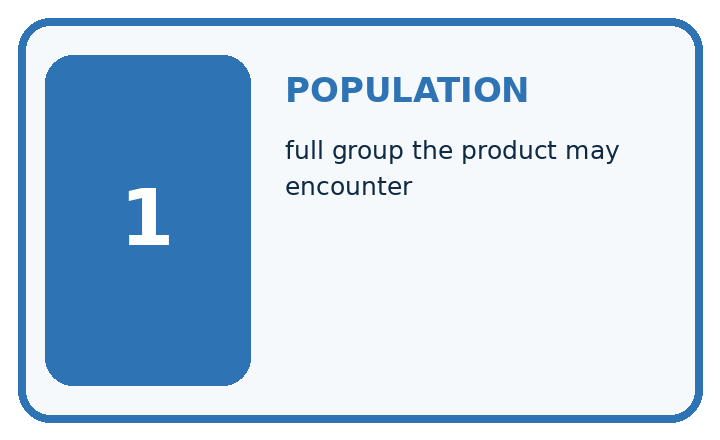
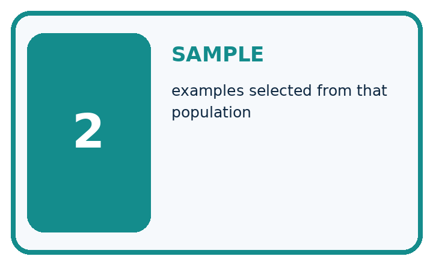
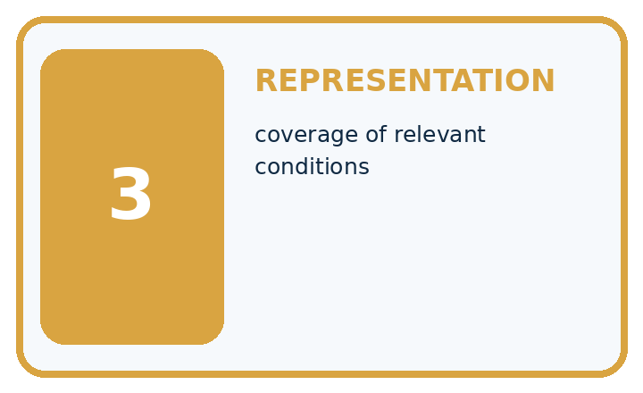
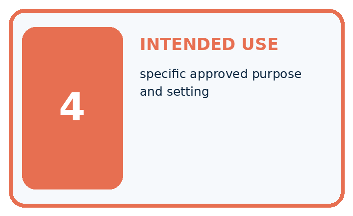
| Term | Precise meaning | My ML example |
|---|---|---|
| population | full group the product may encounter | |
| sample | examples selected from that population | |
| representation | coverage of relevant conditions | |
| intended use | specific approved purpose and setting |
Repair the claim using a definition, calculation, or test record:
Words used in the closer explanation
| Word | Meaning |
|---|---|
| Provenance | Where data came from and how it was created |
| Schema | The stated meaning types units and rules for fields |
| Missing value | An unknown or unavailable value rather than a measured zero |
| Dataset card | A concise record of dataset contents creation intended use and limitations |
Student lesson · 6 of 14
Follow a worked example
WORKED EVIDENCE
Reason Step by Step
Predict first. Then check each step. A correct answer without visible evidence cannot be audited.
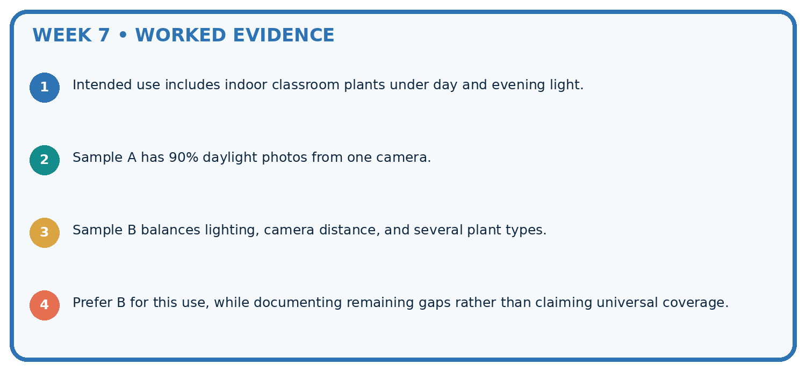
STEP 1 Intended use includes indoor classroom plants under day and evening light.
STEP 2 Sample A has 90% daylight photos from one camera.
STEP 3 Sample B balances lighting, camera distance, and several plant types.
STEP 4 Prefer B for this use, while documenting remaining gaps rather than claiming universal coverage.
Recalculate, retrace, or restate the evidence independently:
A closer explanation
For Robot practice v1, record the purpose as practising inspection, the source as teacher-authored fictional data, and the row meaning as an intended single indoor trip. Record the five-row count, the ID field, minutes as the duration unit and None as unknown. List the duplicate-ID and invalid-duration findings. State that no cleaning has occurred, no train/test split is assigned, and no model has been evaluated.
Add intended use, excluded uses, known gaps, version and a contact or owner. Here the lesson teacher maintains the practice copy; its allowed classroom purpose is inspection practice. Do not describe it as validated navigation data. For a real external dataset, also verify its actual permission or licence and collection context; an absent field in the documentation is an unanswered question, not permission to invent a value.
Learn from the worked case
Cover the result before checking it. Say what is given, choose the procedure, and follow one step at a time. Then uncover the result and explain your first mismatch. Ask why a step is allowed, not only what number it produces.
A pictorial worked case: Sampling and Intended Use
Sample for the conditions in which the plant classifier will actually be used.
The facts we will use
Training set: 12 windowsill plants photographed at midday. Intended use includes evening desk photos; no evening examples have been collected.
All inputs and outcomes in this worked example are invented classroom data; no real model run is claimed.
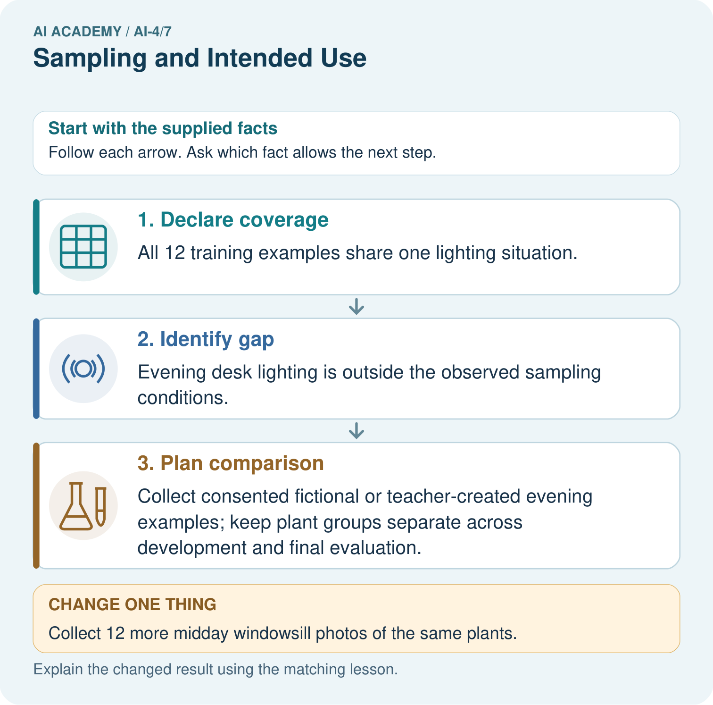
Read the picture one step at a time
Why this result follows
Read the picture in order. Collect consented fictional or teacher-created evening examples; keep plant groups separate across development and final evaluation. The arrows show which recorded input or intermediate result each decision uses. Explain the deciding step aloud before checking the changed case; pointing to the final answer alone does not show how it follows.
What this example does not establish
Condition coverage reduces a known gap but does not guarantee accuracy; test the selected model on fresh intended-use examples.
Student lesson · 7 of 14
Find and repair a mistake
ERROR DETECTIVE
Compare → Diagnose → Repair
Do not patch the answer. Find the earliest unsupported assumption, data problem, or experiment error.
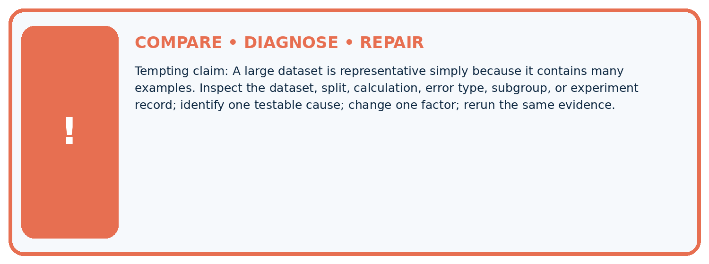
| Evidence record | Expected | Actual | Likely cause / next test |
|---|---|---|---|
| normal case | passes | ||
| boundary case | defined behavior | ||
| missing case | safe fallback | ||
| shifted case | measured limit |
Diagnose one cause and name the cleanest next experiment:
A closer explanation
A complete-looking card does not prove the table is accurate or suitable for a model. It makes claims and unanswered questions reviewable. Report raw counts separately from any later accepted subset, with explicit rules for missing, invalid and repeated records. Do not silently change denominators after cleaning.
For this exercise, zero is allowed and unknown is not zero. That is a stated schema choice, not a universal rule for all duration datasets. In a real task, measurement resolution and event definitions determine which values make sense. Dataset inspection also does not replace protecting held out data from model choices.
Student lesson · 8 of 14
Practise together
ML STUDIO
Specify Before You Run
A trustworthy result can be reproduced from the recorded data, code, settings, and evaluation rule.

Experiment record
QUESTION + intended use + success threshold
DATA version + grouped split + leakage check
CODE/preprocessing + features + model + settings + seed
METRICS + positive class + units + denominators
PREDICTIONS + errors + subgroup slices + limitations
HUMAN reviewer + release, revise, limit, or stop decision
Write the minimum record needed to reproduce today's result:
A closer explanation
A learner replaces both None values with 0 and removes the negative sign from -2. The table now passes a simple nonnegative check, but those edits invent durations. Keep the original values, record the reason for each flag, and check the source. If a correction is supported, save a new version with the original value, corrected value and reason. If not, keep the uncertainty visible.
Another learner says all robot trips are covered because every row says indoor. A dataset card should instead state that outdoor trips are absent and that the data is fictional. Extra copies of existing rows do not create new conditions or new independent evidence.
Practise with less help: Interpret the audit counts
Use workbook W2 for the connected example “Dataset inspection and cards”. First fill the input and rule boxes. Try the middle steps before asking for a hint. After a hint, try the next step yourself.
| Plan | Do | Check |
|---|---|---|
| What is given? Which rule or procedure applies? | Record each intermediate step. | Does the result follow? What remains unknown? |
Explain your trace to a partner. Your partner points to one step to check. Swap roles on the next case. Each person writes their own explanation.
Check your reasoning
Use the worked case for Dataset inspection and cards. Proposed explanation: “A complete card certifies data quality”. Decide whether this explanation is supported. Point to the step or supplied fact that decides; explain your repair if needed.
Answer on your own before discussion. If you are unsure, say which step you need help with.
Explain the picture
Which collection would address the intended-use gap most directly? Point to the relevant step in the picture, then write the changed result and the rule or evidence that supports it.
This is supported practice. Keep the separately named independent case for an attempt before feedback.
Student lesson · 9 of 14
Run the investigation
EVIDENCE LAB
Predict → Run → Calculate → Interpret
Keep the test conditions fixed, record every result, and change only one planned factor.
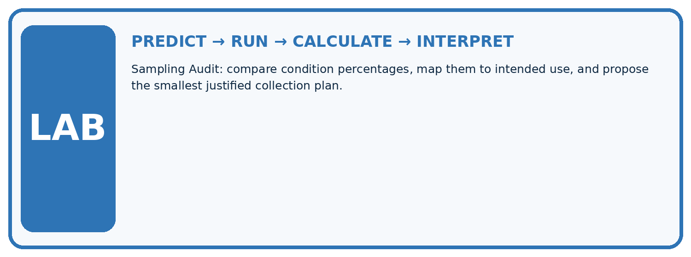
1. Write the hypothesis and expected evidence before running.
2. Sampling Audit: compare condition percentages, map them to intended use, and propose the smallest justified collection plan.
3. Run one normal, one boundary, one missing, and one shifted case.
4. Calculate the metric from raw counts or row-level errors.
5. Interpret what changed, what did not, and what remains unsafe or unknown.
| Case | Prediction | Actual | Calculation / evidence | Meaning / next test |
|---|---|---|---|---|
| Normal | ||||
| Boundary | ||||
| Missing | ||||
| Shifted |
Plan → try → check
Before trying: what do I expect, and why? While trying: which step could first go wrong? Afterwards: what did I actually observe, and what should change? Keep “not run” if you only traced the procedure.
Student lesson · 10 of 14
Build your understanding
MASTERY
From Knowing the Word to Owning the Idea
Move upward only when you can produce evidence without copying the example.

DEFINE Use all four terms precisely: population, sample, representation, intended use.
CALCULATE Reproduce the worked evidence with units and denominator.
TRACE Explain the data, code or decision path.
DIAGNOSE A large dataset is representative simply because it contains many examples.
TRANSFER Solve a fresh dataset or model case.
IMPROVE Change one cause and rerun fixed evidence.
DEFEND State intended use, metric, limitation, and human responsibility.
Student lesson · 11 of 14
Connect your project
CUMULATIVE PROJECT
Responsible Plant Classifier
Every week adds one reviewable artifact to the same evidence-based capstone.
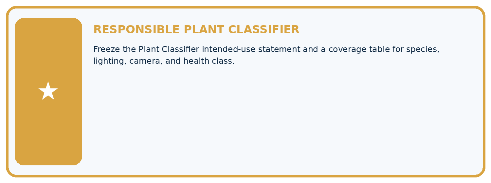
Which requirement or risk does this artifact address?
Which dataset, split, code, and metric version does it use?
What normal and shifted cases were tested?
What remains uncertain or weak?
What decision still belongs to a teacher or qualified human?
My evidence-linked project decision:
Evidence for your project
For your Responsible Plant Classifier, save the input, procedure, observed result and limitation of this check. Label this worked example as practice; use a different, previously unreviewed case when checking independent understanding.
Student lesson · 12 of 14
Show what you know
INDEPENDENT PROOF
Explain • Calculate • Transfer • Defend
Complete this with a fresh case after guided practice and compare it with the mastery criteria.
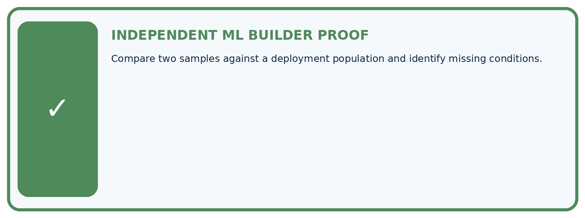
□ Define the task, feature/target roles, and intended-use boundary.
□ Show the calculation, code trace, or experiment record.
□ Test a normal case and one revealing boundary, missing, or shifted case.
□ Diagnose one failure without changing several factors at once.
□ Name a limitation, fairness concern, and the human-review action.
Independent evidence and defense:
My level: □ Not yet □ With one hint □ Independently □ I can teach and defend it
Student lesson · 13 of 14
Study a complete case
Week 7 Worked case
Use the supplied details to practise the weekly concept before attempting the independent question. This case extends the illustrated lesson.
The situation
Training photos use indoor white backgrounds; intended use is outdoors.
The question
Identify the coverage gap.
Worked explanation
Lighting, background and device conditions may differ. Collect representative examples and evaluate outdoor slices separately.
Explain it in your own words
Which detail supports the answer, and why does it matter?
Trace the supplied case visually
Match data coverage to intended use
| Evidence or stage | Value or result |
|---|---|
| Training | Indoor white backgrounds |
| Intended use | Outdoor plants |
| Possible shift | Lighting, background and device |
| Evaluation | Inspect outdoor cases separately |
Training photos use indoor white backgrounds; intended use is outdoors.
Identify the coverage gap.
Lighting, background and device conditions may differ. Collect representative examples and evaluate outdoor slices separately.
Student lesson · 14 of 14
Try a new case independently
Independent case: Changed independent case
Training plant photos are all indoors on one phone. Intended use includes outdoor photos on other cameras. Plan a sampling check before making a general accuracy claim.
Attempt this case before feedback. Record any help. Earlier examples below are further practice; a case already practised with feedback cannot establish fresh transfer.
Week 7 Independent application
Close the worked explanation. Apply the idea to this different question without copying.
Training photographs all show mature plants in bright light, but intended users photograph seedlings indoors. What claim is unsupported and what data is needed?
My answer, with a trace, calculation or supporting evidence
Create and test
Change one relevant detail. Predict the result before testing. Include a boundary or missing-information case when it helps reveal a limit.
My changed input and expected result
Connect to your project
Freeze the Plant Classifier intended-use statement and a coverage table for species, lighting, camera, and health class.
The evidence I will keep
Your teacher has the independent answer and scoring criteria. Complete the matching workbook week to keep your practice evidence together.
Transfer practice from the original programme
Training uses indoor photos from one phone; deployment uses outdoor photos from several phones. Specify two evaluation slices and explain why adding more indoor photos may not resolve the gap.
Use feedback to improve
Attempt the independent case before hints. Record whether you worked alone, used a hint or followed a model. After feedback, fix the first unsupported step and explain why it changed. A later check uses a changed case, not a copied answer.